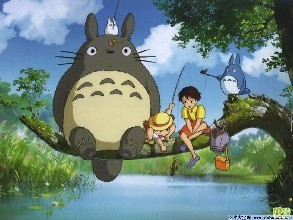
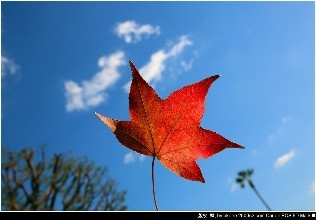

在乎你的人，永远比你主动！
用心甘情愿的态度，过随遇而安的生活
喜欢仰望晴天的太阳，眯着眼睛单曲循环心里想念一个人，或是被她用电话提醒着被爱的甜蜜，没有什么，生活的原本该如此，活的精致，不粗糙单调，文字，音乐，安静的手机键盘声音，似乎一生的光阴就这样温暖的流过，流淌的是歌，在心底沉淀成如诗的行板，一行行，一段段，温馨如蜜。

情如水，意如花，花开花落，随春凤，手挽你的情，一路同行，内心温暖，你的关怀让我幸福，做心灵的知己，不在孤单，阳光依旧，情意灿烂，风花雪月，爱一场，遥望景如画，美意话如诗，一心长久时。

我不是不会对别人动心，而是有了你我没必要再对别人动心，我不是不会爱上别人，而且有了你我懂得拥有了爱情就别再暧昧，我不是不会去碰个更好的，而是已经有了你，我不想再碰到更好的，爱情可遇不可求，真爱只有一次，即使你不是最好的，不是最合适的，但却是我最想珍惜的，遇见你我很幸运，所以我定会不离不弃。